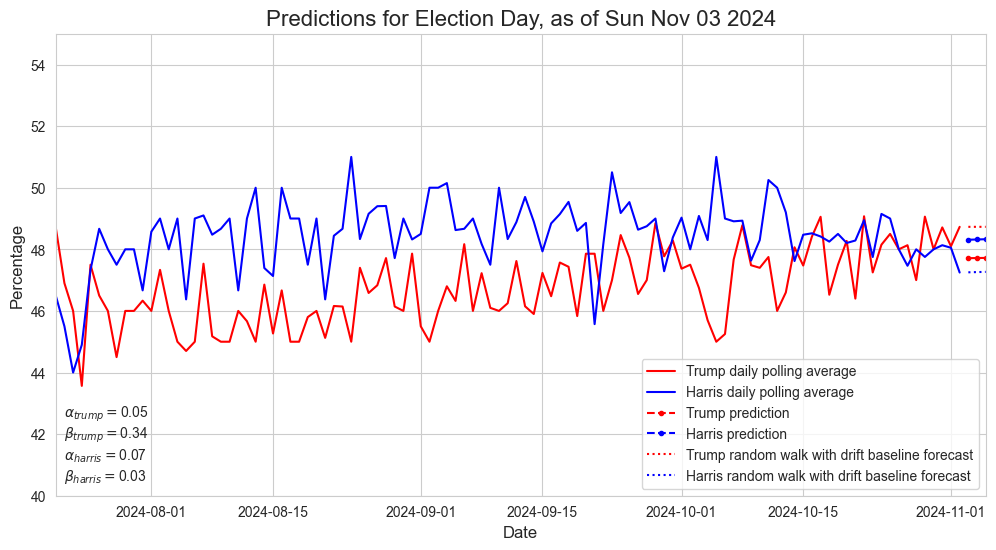

This project forecasts, on each day leading up to the 2024 U.S. presidential election, who will win. Predictions are made using this polling data from 538, along with 538's polling averages for swing states, found on this page.
Below you'll find today's forecast compared to the baseline and 538's predictions, followed by previous days' forecasts, followed by information about my methodology.
| Forecast | Baseline | 538 |
| Trump: 268 (47.7%) AZ GA NC NV | Trump: 268 (48.7%) AZ GA NC NV | Trump (53.3% chance) |
| Harris: 270 (48.3%) MI WI PA | Harris: 270 (47.3%) MI WI PA | Harris (46.5% chance) |
My forecast and the baseline assume both candidates win their "safe" states. The formatting is:
Candidate: # of electoral votes (popular vote) swing states won
538's forecast shows the candidate's % chance of winning the election.
Model
See below for a description of the hyperparameters shown in the lower left-hand corner.
The annotated percentages are 538's forecast of the likelihoods of each candidate to win, and the stars indicate which candidate 538 is more likely. You can see the history of 538's predictions graphed on their website.
As mentioned above, my method assumes each candidate will win their "safe" states, or the non-swing states they are favored to win. You can find more information about which states each candidate is expected to win at 538.
To predict who would win which swing states I calculated each candidate's percentage of the popular vote, only among those two candidates. Then I allocated that percentage of electoral votes to each candidate. I awarded states starting with the states the candidate was leading in by the most, according to 538. After allocating, once there were not enough votes for the next state, I gave that state to the candidate if their remaining votes were at least half of that state's electoral votes.
Although this was a very simple algorithm, the results are not likely to differ too much from the actual outcome. The average sample size of the polls taken is 1600, giving an estimated margin of error of 2.5%. All of the leads in the swing states are well within this margin of error.
In computing the daily averages I did not use all of the data available. To begin with, I only used polls from after Joe Biden dropped out of the race and only results for Donald Trump and Kamala Harris. There were a few other restrictions I made in which polls got factored into my daily averages.
I only used the polls among likely voters. "Likely" is subjective, and depends on the poll. However, as this article from the New York Times explains, it makes no sense to use polls from all registered or all adults, since the outcome is only going to be determined by those who actually vote.
As recent history has shown, there is often a discrepancy between who wins the popular vote and who wins the election. To keep my popular vote predictions consistent with my swing state predictions, I only used national and swing state polls. I left out all polls from non-swing states.
Finally, 538 rates all the polls with a "POLLSCORE". You can read about their methodology for determining this metric here. To summarize, negative POLLSCORES are considered reliable polls, so I only factored in polls whose POLLSCORE was negative.
For a time series with a trend (both candidates seem to be trending up as Election Day approaches), double exponential smoothing appeared to be the most natural choice for forecasting. Recall, the double exponential smoothing model predicts at time \(t\)
Originally I didn't think exponential smoothing would be an appropriate election forecast method, since my intuition said new polls shouldn't really rely on polls that far in the past, and exponential smoothing uses all previous observations to make predictions. On the other hand, I wanted the slope term used in double exponential smoothing that takes trends into account. So I wanted to use a combination of a weighted rolling average for the past 7 days, with the double exponential smoothing slope term.
However, when trying to figure out how to modify the model, I realized that the weights already decrease exponentially. If I make my hyperparameters, \( \alpha\) and \( \beta\) for each candidate, large enough, then I can make sure the model only takes the past week or so's observations into account, while the rest give negligible contributions. This seemed much simpler.
I ran a grid search to tune my hyperparameters, optimizing the mean absolute error of the forecast on the test set relative to the mean absolute error of the naïve forecast on the training set over an equivalent horizon. I used all my polling data as training data, with five cross-validation splits and holdout sets of 7 days each. I did it this way because I thought all the data would be useful in building the model, it didn't make sense to leave out the last few days as test data. Surprisingly, after running the grid search the hyperparameters all turned out to be small, meaning the better forecasts come from taking all previous data into account!